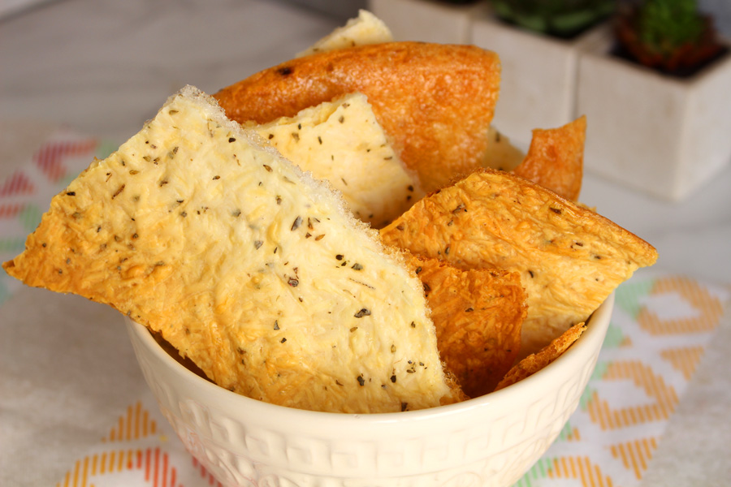

bolo de coco

Ingredientes
- 2 e 1/2 xícaras de farinha de trigo
- 2 xícaras de açúcar refinado
- 1 pacote de coco ralado
- 3 colheres de margarina
- 200 ml de leite
- 4 ovos
- 1 colher (sopa) de fermento
- 1 pitada de sal
Modo de Preparo
- Bata as claras em neve e reserve.
- Em uma batedeira, misture o açúcar, as gemas e a margarina por 3 minutos.
- Em seguida, acrescente o leite, a farinha, o coco ralado, uma pitada de sal e continue batendo.
- Desligue a batedeira e acrescente as claras em neve e o fermento.
- Misture manualmente.
- Coloque a massa em um assadeira untada com manteiga e leve ao forno preaquecido a 210° C por 30 minutos.
Ingredientes
- 2 e 1/2 xícaras de farinha de trigo
- 2 xícaras de açúcar refinado
- 1 pacote de coco ralado
- 3 colheres de margarina
- 200 ml de leite
- 4 ovos
- 1 colher (sopa) de fermento
- 1 pitada de sal
Modo de Preparo
- Bata as claras em neve e reserve.
- Em uma batedeira, misture o açúcar, as gemas e a margarina por 3 minutos.
- Em seguida, acrescente o leite, a farinha, o coco ralado, uma pitada de sal e continue batendo.
- Desligue a batedeira e acrescente as claras em neve e o fermento.
- Misture manualmente.
- Coloque a massa em um assadeira untada com manteiga e leve ao forno preaquecido a 210° C por 30 minutos.
biscoitão montanha russa sem óleo
Ingredientes
- 1/2 xícara (chá) de leite
- 3 ovos
- 2 xícaras (chá) de polvilho doce
- 200 ml de manteiga derretida
- 1 pitada de sal
- queijo de sua preferência ralado a gosto
- temperos da sua preferência (opcional)
Modo de Preparo
- coloque a manteiga para derreter no micro-ondas de 30 em 30 segundos.
- Quando a manteiga estiver completamente derretida, transfira-a para o liquidificador e junte o restante dos ingredientes.
- Bata tudo muito bem no liquidificador até obter uma massa líquida e homogênea.
- Transfira para uma assadeira (não precisa ser untada) e polvilhe o queijo ralado por cima.
- Leve para assar em forno preaquecido a 200º C até dourar.
Crostini de tapioca
Ingredientes
- 1 xícara de tapioca
- 50g de parmesão ralado
- 60ml de água (4 colheres de sopa)
- Temperos a gosto (opcional)
Modo de Preparo
- Coloque 1 xícara de farinha de tapioca peneirada em uma tigela
- acrescente o parmesão ralado e os temperos de sua preferência.
- coloque 4 colheres de sopa de água no recipiente e misture bem os ingredientes.
- Transfira a mistura para uma assadeira untada com um pouco de manteiga. Coloque para assar no forno preaquecido a 200°C por cerca de 25 minutos, até o crostini ficar dourado e com uma textura bem sequinha